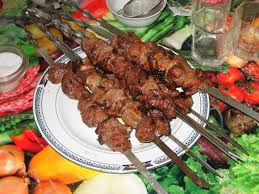

46. Ассорти из морской рыбыПо 200 г филе окуня, ставриды и трески, 100 г сметаны, лимон, зелень укропа, петрушки, перец и соль по вкусу.
Филе нарезать кусочками по 30 — 40 г, посолить, поперчить, добавить рубленую зелень петрушки и укропа, полить лимонным соком и выдержать в эмалированной посуде около часа в холодном месте.
Смазать кусочки рыбы сметаной, нанизать на шампуры и жарить над раскаленными углями до готовности, постоянно переворачивая шампуры.
Подать на блюде с лимонными дольками. В качестве гарнира можно предложить жареную картошку и свежие овощи.
47. Из речной рыбы
4 рыбины по 250 г, 100 г репчатого лука, 50 г растительного масла, шашлычный соус, зелень петрушки, перец и соль по вкусу.
Речную рыбу очистить от чешуи, выпотрошить, удалить жабры, хорошо промыть. Посолить и поперчить тушку снаружи и внутри, сверху натереть растительным маслом, насадить на шампур. На коже от верхнего плавника вдоль ребер сделать острым ножом вертикальную насечку глубиной до 1 см через 1 — 1, 5 см от головы до хвоста (в костных рыбах — плотве, красноперке, подлещике и т. д. это позволяет посечь мелкие кости и сделать их съедобными).
Жарить рыбу над раскаленными углями, постоянно переворачивая и сбрызгивая холодной водой.
Подать с луком, порезанным кольцами, и зеленью. В качестве гарнира можно использовать запеченную в золе картошку.
48. Из рыбных трубочек
600 г филе крупной рыбы (зубатки, трески, кеты), 20 г горчицы, 100 г репчатого лука, 10 — 50 г растительного масла, 50 г шпика, лимон, зелень, перец и соль по вкусу.
Порезать филе рыбы на тонкие ломтики (6 см в ширину, 10 — 12 см в длину и 0, 5 см в толщину), немного подсолить и подкислить лимонным соком, смазать горчицей с одной стороны, посыпать на горчицу натертый на терке лук и рубленую зелень и свернуть их, скрепив деревянными шпильками.
Нанизать на шампур, чередуя с небольшими кусочками сала, посолить, поперчить, смазать растительным маслом и запечь над раскаленными углями до готовности.
Подать на блюде с кружочками лимона и кольцами лука. В качестве гарнира — картофельное пюре и свежие овощи.
49. Из судака
800 г филе судака, 400 г сала, лимон, черный молотый перец и соль по вкусу.
Филе судака нарезать кусочками по 40 — 50 г, посолить, посыпать черным молотым перцем и дать немного постоять. Подготовить полоски из сала, нарезанные так, чтобы куски судака можно было бы полностью завернуть в полоску сала. Сало можно взять свежее или соленое. В последнем случае кусочки рыбы необходимо будет меньше солить или не солить вообще.
Завернуть кусочки рыбы в полоски сала рулетиком, скрепить деревянными шпильками, нанизать на шампуры и запечь над раскаленными углями до готовности. В процессе запекания кусочки рыбы слегка сбрызнуть лимонным соком.
Подать на блюде в горячем виде. В качестве гарнира — картофельное пюре и свежие овощи.
50. Из щуки
2 щуки по 500 г, по 100 г репчатого лука и шашлычного соуса, перец и соль по вкусу.
Рыбу очистить от чешуи, выпотрошить, хорошо промыть, обсушить. Нарезать на кусочки по 40 — 60 г, посолить, поперчить, нанизать на шампур и обжарить над раскаленными углями до готовности.
Подать к столу на блюде с нарезанным кольцами луком. В качестве гарнира можно предложить печеную в золе картошку. Отдельно подать шашлычный соус.